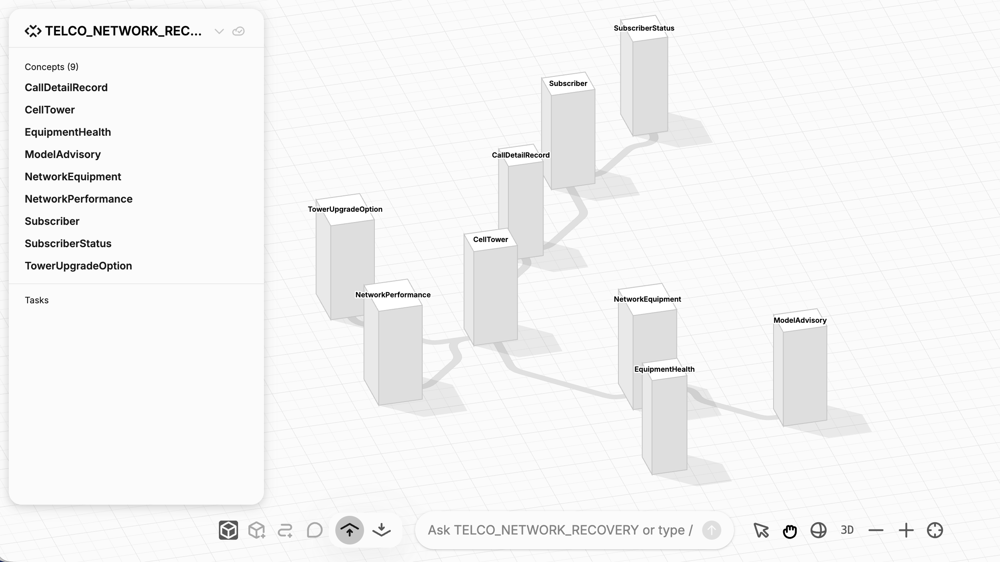

Can an agent defend a network decision?
Given a budget, which towers should we upgrade, at which tier, and why? The answer must be a feasible plan with checkable evidence, not just fluent text.
The answer contract
Return selected tower IDs and tiers, check the budget and crew totals, and show the source of each decision signal.
Reasoning behind the answer
The ontology connects enterprise data to a decision an agent can inspect.
Source data
Inventory, health, performance, advisories, subscribers, calls, and upgrade options.
Deployed ontology
Typed concepts, relationships, derived properties, and operational rules.
Evidence + solver
Jobs compute risk and graph signals. Optimization can solve again for a new budget.
Demo agent
Curated tools read evidence or run a budget-specific scenario.
The network is a connected business model, not a set of isolated tables.

Relationships make each reasoner ask a richer question.
What can fail?
Equipment is installed on towers. Health belongs to equipment. Advisories match equipment models. Performance belongs to towers.
Who is affected?
Calls connect subscribers and route through towers. Subscriber value combines lifetime value with churn risk.
What can we do?
Each tower has tiered upgrade options with a cost, install effort, and capacity gain.
The same tower identity links operational rules, predicted equipment risk, call-derived customer impact, and upgrade choices.
First, derive tower health from connected observations.
model.define(
CellTower.avg_packet_loss(
aggs.avg(NetworkPerformance.packet_loss_pct)
.where(NetworkPerformance.tower == CellTower)
.per(CellTower)
)
)
model.define(
CellTower.avg_health_score(
aggs.avg(EquipmentHealth.health_score)
.where(
EquipmentHealth.equipment == NetworkEquipment,
NetworkEquipment.tower == CellTower,
)
.per(CellTower)
)
)What the model computes
Then define critical restoration as two explicit policy branches.
model.where(
CellTower.region == "WEST",
CellTower.status == "DEGRADED",
CellTower.avg_health_score < 0.85,
).define(CellTower.operational_critical_restore())
model.where(
CellTower.region == "WEST",
CellTower.avg_packet_loss > 5.0,
CellTower.avg_health_score < 0.85,
).define(CellTower.operational_critical_restore())Why two definitions?
The prediction graph follows the ontology's relationships.
gnn_graph = Graph(model, directed=False, weighted=False)
model.define(
gnn_graph.Edge.new(src=EquipmentHealth, dst=NetworkEquipment)
).where(EquipmentHealth.equipment == NetworkEquipment)
model.define(
gnn_graph.Edge.new(src=NetworkEquipment, dst=CellTower)
).where(NetworkEquipment.tower == CellTower)
model.define(
gnn_graph.Edge.new(src=ModelAdvisory, dst=NetworkEquipment)
).where(ModelAdvisory.model == NetworkEquipment.eqp_model)What each edge means
Features are typed, and the training label is kept out.
equipment_df["AT_RISK"] = (
equipment_df["STATUS"].isin(["FAILING", "WARNING"]).astype(int)
)
pt = PropertyTransformer(
drop=[
NetworkEquipment.status,
CellTower.avg_health_score,
],
category=[
NetworkEquipment.equipment_type,
ModelAdvisory.advisory_type,
],
continuous=[
EquipmentHealth.failure_rate,
EquipmentHealth.health_score,
ModelAdvisory.severity,
],
integer=[EquipmentHealth.mtbf_hours, CellTower.capacity_gbps],
)Design choices
Train once, predict equipment scores, then roll up to towers.
gnn = GNN(
exp_database=EXP_DATABASE,
exp_schema=EXP_SCHEMA,
graph=gnn_graph,
property_transformer=pt,
train=Train,
validation=Val,
task_type="binary_classification",
eval_metric="roc_auc",
has_time_column=False,
stream_logs=False,
seed=SEED,
device="cpu",
n_epochs=GNN_EPOCHS,
lr=GNN_LR,
)
gnn.fit()
NetworkEquipment.predictions = gnn.predictions(domain=Test)Output passed forward
Construct the call graph, then run PageRank.
call_graph = Graph(
model,
directed=True,
weighted=False,
node_concept=Subscriber,
aggregator="sum",
)
cdr = CallDetailRecord.ref()
caller = Subscriber.ref()
callee = Subscriber.ref()
model.where(
cdr.caller(caller),
cdr.callee(callee),
).define(call_graph.Edge.new(src=caller, dst=callee))
call_graph.Node.influence_score = call_graph.pagerank()What this graph means
Link routed calls back to towers and customer impact.
model.define(
CellTower.weighted_impact(
aggs.sum(Subscriber.customer_value)
.where(
CallDetailRecord.routed_through(CellTower),
CallDetailRecord.caller(Subscriber),
Subscriber.status == "ACTIVE",
)
.per(CellTower)
)
)The decision input
Which call route connects the most influential subscribers?
A node score tells us who matters. Path reasoning shows the route, hop by hop, including the towers that carried it.
Path enumeration
p = model.path(
seed,
Subscriber.calls_via.repeat(1, PATH_MAX_HOPS),
).all().paths()The job starts at the highest-PageRank subscriber, filters for simple paths, and ranks them by summed node influence. The table retains subscriber IDs and routing towers at each hop.
Paths are an explanation surface. The optimizer currently consumes tower customer impact, not the top-path row.
Rules and prediction together define the candidate set.
model.where(CellTower.operational_critical_restore()).define(
CellTower.is_critical_restore()
)
model.where(CellTower.failure_intensity > FAILURE_INTENSITY_THRESHOLD).define(
CellTower.is_critical_restore()
)
problem = Problem(model, Float)
problem.solve_for(
TowerUpgradeOption.selected,
where=[
TowerUpgradeOption.tower == CellTower,
CellTower.is_critical_restore(),
],
name=["tower_id", "tier"],
type="bin",
)Decision scope
Make budget, crew, and exclusivity hard constraints.
scope = model.where(
TowerUpgradeOption.tower == CellTower,
CellTower.is_critical_restore(),
)
problem.satisfy(
scope.require(aggs.sum(TowerUpgradeOption.selected).per(CellTower) <= 1)
)
problem.satisfy(
scope.require(
aggs.sum(TowerUpgradeOption.selected * TowerUpgradeOption.cost)
<= budget_usd
)
)
problem.satisfy(
scope.require(
aggs.sum(TowerUpgradeOption.selected * TowerUpgradeOption.install_weeks)
<= INSTALL_WEEKS_BUDGET
)
)Three limits
Optimize the portfolio, then inspect the solver status.
problem.maximize(
aggs.sum(
TowerUpgradeOption.selected
* TowerUpgradeOption.capacity_increase_gbps
* CellTower.weighted_impact
* CellTower.failure_intensity
).where(
TowerUpgradeOption.tower == CellTower,
CellTower.is_critical_restore(),
)
)
problem.solve("highs")
status = problem.solve_info().termination_statusWhat the solver combines
The solved portfolio stays within both limits.
Selected upgrade portfolio
Hard limits
The what-if is illustrative; it is not a solver search trace.
Every selected upgrade exposes the signals used by the portfolio model.
Operational state
Region, status, packet loss, and health may make a tower eligible under the deployed critical-restore rule.
CELLTOWER_OPERATIONAL_CRITICAL_RESTOREEquipment risk
Equipment-level positive-class scores roll up to tower failure intensity, which can also make a tower eligible.
TOWER_FAILURE_SCORECustomer exposure
Active callers and call-weighted customer value show where an upgrade has business impact.
TOWER_CUSTOMER_IMPACTFeasible tier
Option cost, install weeks, and capacity gain are evaluated together with the other towers in the portfolio.
SELECTED_UPGRADESThese fields explain the selection inputs and objective contribution. They do not prove why an excluded tower lost a counterfactual solve.
Interrogate each signal, then require a checked portfolio answer.
Rules
Which WEST towers do the deployed operational rules flag as critical for restoration, and why?
Predictive
Which equipment items have the highest at-risk scores? Include status, model, and tower.
Graph
Which towers carry the greatest call-weighted customer impact? Show active caller counts and PageRank influence.
Paths
What is the most influential enumerated call path, and which towers carry its hops?
Prescriptive + validation
Optimize tower upgrades with a budget of $4 million. Run the live budget optimization; list selected tower IDs and tiers, total spend, capacity restored, and install weeks.
Risk alone misses the business consequence.
Two towers can look similar on equipment risk but very different on customer exposure.
Two towers
Compare TWR-0030 and TWR-0067 on failure intensity and call-weighted customer impact. Why would a risk-only ranking miss an important difference?
This is a screening comparison, not the final upgrade choice. The optimizer also considers capacity gain, cost, and crew weeks.
What is actually validated, deterministic, and traceable?
Demonstrated in this snapshot
Named inputs. The curated query reads the deployed ontology and named RESULTS tables, not an agent-generated calculation.
Reconciled plan. The query rejects a mismatch in selected row count, cost, install weeks, or capacity against RESTORE_PLAN.
Fixed result. Repeated reads of unchanged materialized tables return the same plan data. The stored solver status is OPTIMAL.
Do not claim as guaranteed yet
Agent prose. A free-form answer can omit a row or invent a cause; compare it with tool output and escalate unsupported claims.
Retraining. The synthetic-label GNN is a risk proxy; retraining can change scores and the downstream plan.
Row lineage. This demo names source tables and jobs but does not persist a versioned, end-to-end row-level provenance record.
For a production guarantee, add pinned input versions and trace IDs around this validated decision result, then evaluate the agent's rendering.
Use all five reasoners while keeping the decision boundary explicit.
Decision inputs
The ontology links eligible towers, equipment risk, customer exposure, and upgrade options.
Optimization
Choose tower tiers within $5M and 200 install weeks.
Funded plan
27 towers, $4,985,789 spend, 183 Gbps capacity gain in the current snapshot.
The top call route adds network context to the agent's briefing. It is not an optimization input in this demo.
How many WEST towers meet the operational rule? Give the $5M plan totals and three selected upgrades with the largest objective contribution. Report the top call path separately and state that it did not influence the solve.
Change the budget live; refresh upstream signals when the network changes.
Refresh the model and reasoners
rai models deploy --waitRefresh deployed ontology and rules.run_graph_impact.pyRecompute PageRank and tower impact.run_paths.pyRe-enumerate the top call path.run_predictive_failure.pyRetrain and write risk scores.run_optimization.pySolve again after upstream outputs refresh.What the agent can ask
Saved $5M planRead and reconcile the materialized baseline.New budgetRun optimize_upgrades_for_budget against current deployed rules and stored signals.Prediction outputsEquipment scores and tower failure intensity remain fixed until refreshed.Graph outputsSubscriber influence, tower impact, and top path remain fixed until refreshed.A budget prompt reruns the solver, not the GNN or PageRank. Source-data changes need a controlled upstream refresh.
Make the agent's recommendation inspectable.
The ontology and reasoners compute a constrained plan. The agent explains it using curated results that can be checked against the stored decision.
Decision result
Agent answer checks
The demo reconciles a stored plan. Production-grade reproducibility also needs pinned snapshots, trace IDs, and versioned row-level lineage.
Here is the question we are asking
Here is the PyRel that derives the answer
model.where(
CellTower.region == "WEST",
CellTower.status == "DEGRADED",
CellTower.avg_health_score < 0.85,
).define(CellTower.operational_critical_restore())
model.where(
CellTower.region == "WEST",
CellTower.avg_packet_loss > 5.0,
CellTower.avg_health_score < 0.85,
).define(CellTower.operational_critical_restore())Either policy branch asserts the same tower flag. The health and packet-loss values are themselves derived from related equipment and performance observations, as shown earlier; the agent reads the deployed flag.
Here is the question we are asking
Here is the GNN fit and prediction call
gnn = GNN(
exp_database=EXP_DATABASE, exp_schema=EXP_SCHEMA,
graph=gnn_graph, property_transformer=pt,
train=Train, validation=Val,
task_type="binary_classification", eval_metric="roc_auc",
has_time_column=False, stream_logs=False,
seed=SEED, device="cpu",
n_epochs=GNN_EPOCHS, lr=GNN_LR,
)
gnn.fit()
NetworkEquipment.predictions = gnn.predictions(domain=Test)The graph and feature transformer are configured in the preceding slides. Training uses current WARNING/FAILING status as a synthetic label, so this is an at-risk status proxy, not a calibrated future-failure forecast.
Here is the question we are asking
Here is the graph and PageRank call
call_graph = Graph(
model,
directed=True,
weighted=False,
node_concept=Subscriber,
aggregator="sum",
)
cdr = CallDetailRecord.ref()
caller = Subscriber.ref()
callee = Subscriber.ref()
model.where(
cdr.caller(caller),
cdr.callee(callee),
).define(call_graph.Edge.new(src=caller, dst=callee))
call_graph.Node.influence_score = call_graph.pagerank()Each call becomes a directed subscriber edge. A separate tower aggregation sums caller value and influence over active routed calls; only call-weighted value enters the current optimizer objective.
Here is the question we are asking
Here is the PyRel behind that decision
problem = Problem(model, Float)
problem.solve_for(TowerUpgradeOption.selected,
where=[TowerUpgradeOption.tower == CellTower,
CellTower.is_critical_restore()], type="bin")
problem.satisfy(model.where(
TowerUpgradeOption.tower == CellTower,
CellTower.is_critical_restore(),
).require(aggs.sum(TowerUpgradeOption.selected * TowerUpgradeOption.cost)
<= budget_usd))
problem.maximize(aggs.sum(
TowerUpgradeOption.selected * TowerUpgradeOption.capacity_increase_gbps
* CellTower.weighted_impact * CellTower.failure_intensity
).where(TowerUpgradeOption.tower == CellTower,
CellTower.is_critical_restore()))The solver chooses tiers to maximize capacity gain weighted by failure intensity and routed-call impact. The full formulation also enforces one tier per tower and a 200-week install limit. The agent can run a new budget scenario or read the saved $5M baseline.
Here is the question we are asking
Here is the path enumeration and scoring
seed = Subscriber.ref()
i = Integer.ref()
j = Integer.ref()
p = model.path(seed, Subscriber.calls_via.repeat(1, PATH_MAX_HOPS)).all().paths()
score_df = model.where(
seed.id == hub_id,
p,
not_(where(i < j, p.nodes(i) == p.nodes(j))),
total := aggs.sum(Subscriber(p.nodes).influence_score).per(p),
).select(
p.alias("PATH_ID"),
total.alias("INFLUENCE_LOAD"),
).to_df()The job starts at the highest-PageRank subscriber, enumerates simple paths up to three hops, and ranks them by summed subscriber influence. The path adds context; it is not a solve input.
Here is the question we are asking
Here is the live agent handoff
selected, plan = optimize(budget_usd, config=model.config)
summary = plan.iloc[0]
upgrades = selected.rename(columns={
"CAPACITY_GBPS": "capacity_gbps",
"FAILURE_INTENSITY": "failure_intensity",
"WEIGHTED_IMPACT": "weighted_impact",
})
upgrades["objective_contribution"] = (
upgrades["capacity_gbps"] * upgrades["failure_intensity"]
* upgrades["weighted_impact"]
)
upgrades["plan_status"] = summary["TERMINATION_STATUS"]Abridged agent tool: it runs a new constrained solve against deployed rules and stored GNN/graph signals. The actual tool also returns budget, spend, install weeks, capacity, and every selected tower and tier; it leaves the saved $5M plan untouched.